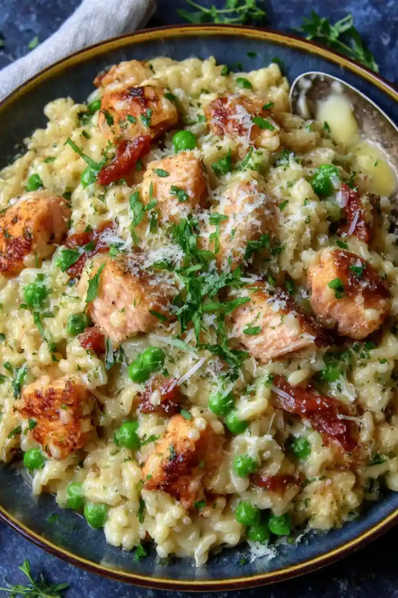

Here at Lrelin Village, we offer the finest seafood delectables. Choose from out options for the low price of 450 rupees! Have an allergy? Please contact our head cook for quesitons about the menu!

Porgy menuiere, a delicacy known for its flavorful meats and boost of might and vigor, popular among the coastal regions and known for its built-in seasonings. This dish is made only by skilled hands and enojoyed all around.

Made with love, this food can leave you feeling as if home is in a dish! This meal can heal you from all your troubles, made with home caught seafood. Spices imported from Goron city makes this dish explode with flavor! The intensity of the Goron Spice makes this meal unsuitable for children to consume. Please purchase with caution.

Seafood Paella is made with our sliced and carefully assembled toppins of Mighty Porgy,Hylian Rice,Goat Butter, and rock salt. This celebratory meal is considered top-sehlf and is common in birthday parties for fishermen. Eating this can make you tough and add an extra boost to your day!

A dish crafted by the Rito and transported into a coastal meal, the fist bite cannot be recreated! The crispy skin of hearty salmon puts texture of this dish into a class of it's own.

Our salmon risotto is known to be rich, as the rice permeates the light of flavor of the salmon, giving the meal a flavorful taste that melts right in your mouth. Consuming this can give you vigor and a temporary boost for your day. It is said that the salmon can also be substitued for hylian mushrooms.

Native to the Gerudo Valley, home to The Noble Canteen, this ddrink was imported and provided to Lurelin village for a limited time! This treat is said to have a light sweet taste, provifing a cooling sensation that sticks.Noble Pursuit ice is specially made in the Northern Icehouse located in Gerudo Valley. Not for the consumption of children.